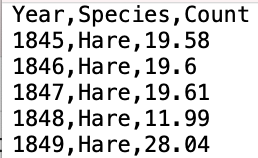

3.2 Lecture Notes
In this module, we will learn the basics of R by manipulating some real-world data. In particular, we’ll work with data from the Hudson Bay looking at the size of historical hare and lynx populations.
We’ll talk a lot more about this dataset and the biology it represents when we study predator-prey models, but for now let’s use it make some exploratory plots.
Data adapted from here: http://people.whitman.edu/~hundledr/courses/M250F03/M250.html
3.2.1 Data import
Our data is available as a comma-delimited text file, or csv. Here’s the top of it as it appears in a text editor:

The first thing we have to do to work with it is to import it into R. R has a few built-in functions that allow for easy and efficient import of data. As we go on, we’ll learn a lot of nuances about how these work, but for now we’ll start with a tidy, well-behaved dataset that is easy to work with. The read.table function will be our workhorse for reading in data.
Let’s try it out. To run this function, we need to provide one argument: the location of the data we want to load.
ADD IMAGE HERE
A couple things went wrong here:
- The data is imported as a single column - we want R to know that there are multiple columns delimited by commas
- The header (
Year,Species,Count) was imported as the first row of our data - we would instead like R to recognize that this is a header rather than a row of data
How do we fix this? Along with the essential argument of the file location, we can provide read.table with many optional arguments. Because there are many possibilities for what our second argument may be, we need to explicitly reference the name of our optional arguments.
Let’s inform R that our data is split by commas. We can do this using the sep (short for “separator”) argument.
ADD IMAGE
Now we correctly have three columns of data! We now have to tell R that the first row is a header. There is an optional argument header which can be set to TRUE or FALSE (case sensitive - more on this later).
ADD IMAGE
Looks good! Now, a couple nuances:
- The order named arguments (here,
sepandheaderdoesn’t matter. The following lines of code are equivalent:
read.table("hare_lynx.csv", sep = ",", header = TRUE)
read.table("hare_lynx.csv", header = TRUE, sep = ",")- For better legibility, we can add line breaks after commas, like so:
This does not impact how data is evaluated.
Now that we read in the data correctly, the last thing to do is to save it as a variable. This means that rather than just reading in the data and printing it out, we truly save it in the computer’s memory and assign it a name.
The general syntax for saving a variable in R is:
variableName <- value
For example:
Now, when we refer to hareLynxData, we are referring to the data we have just imported.
For example we can use the head function, which displays the first 10 rows of our data:
## Year Species Count
## 1 1845 Hare 19.58
## 2 1846 Hare 19.60
## 3 1847 Hare 19.61
## 4 1848 Hare 11.99
## 5 1849 Hare 28.04
## 6 1850 Hare 58.00